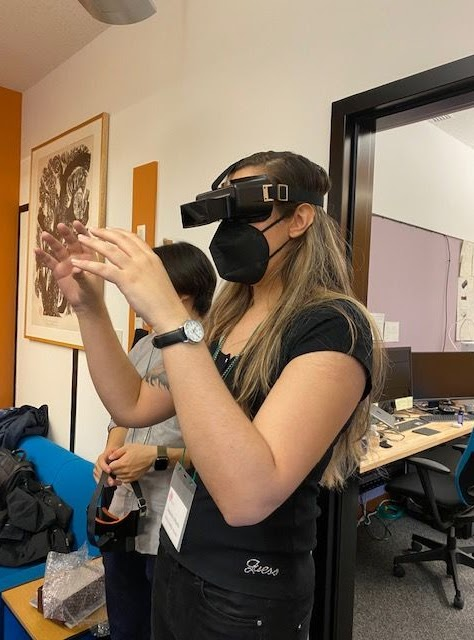
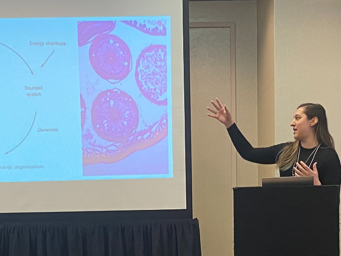

Research
My research focuses on philosophy of mind, cognitive science, and philosophy of science & biology, with the overarching aim of locating the mind in the natural world.
My main research project investigates the mind at its lower boundaries: I synthesize research concerning invertebrate sentience and primitive biological agency to develop a framework that unifies life, agency, and sentience. Alongside my core project, I investigate the metaphysics of consciousness vis-a-vis the metaphysics of science, as well as the relationship between the mind and biology.
Papers in Progress
Abstract Sentience, the capacity for valenced mental states, has traditionally been thought to be restricted to sophisticated animals; but many philosophers and scientists have increasingly encouraged that a much broader range of animals be countenanced as sentient. In this paper I argue for biosentientism: the thesis that all organisms are sentient. Consideration of the neural mechanism underlying the microscopic worm Caenorhabditis elegans's (C. elegans) motivational trade-off decisions reveals that C. elegans exemplifies flexible behavioural control via top-down attention, a mechanism which I argue lies in between reflex and cognition. I develop a framework which allows us to make sense of this kind of flexible behaviour in the absence of cognition by understanding organisms as primitive agents responding to the affordances of their environments. I then deploy this framework to argue that C. elegans is sentient, and, further, to argue for biosentientism.
Abstract Valenced experiences are central features of our mental lives, with explanatory roles in ethics, moral psychology, and as a "common currency" for decision-making. Although the orthodox approach to the study of valence has mainly attended to sophisticated animals, recent considerations of animal welfare and the comparative psychology of decision-making have inspired philosophers and scientists to attend to the possibility of valenced experiences in distant creatures like invertebrates, insects, and perhaps even beyond. But even the most liberal theories of valence would rule out valence in any creature that lacks a brain of sufficient similarity to humans or which lacks the kind of mental representations possessed by sophisticated animals. Here I defend an enactive-ecological theory of primordial valence, according to which valence is understood vis-a-vis an organism's affordances. I respond to the "selection problem" which threatens to undercut the role of primordial valence in decision-making, and argue that, while valence does underlie decision-making, its role as a "common currency" has been overstated.

Navigating while wearing prism goggles. Embodied Cognitive Science Unit, Okinawa Institute of Science and Technology, 2022.

Presenting at the Southern Society for Philosophy and Psychology, 2024.